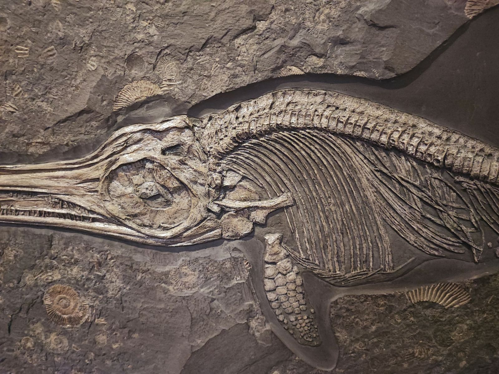

The Charmouth ichthyosaur — eleven weeks inside a nodule
The brief
The museum held an ichthyosaur collected near Charmouth in 1962 and never opened — a plaster jacket in a store, catalogued from a collector's notebook sketch. A new gallery needed it on a wall in fourteen months, and the trustees needed to know what was actually inside the jacket before they committed the gallery design to it.
The decisions
CT first, before a single cut: the scan showed a complete skull and one fore-paddle, a vertebral column partly scattered by scavenging before burial, and no rear paddle worth chasing. Acid preparation was assessed and rejected — eleven hours of the log are the tests and the reasoning, because the bone's surface detail would not have survived it. The jacket came off in sections, each photographed; bulk matrix went by air scribe, the last millimetre by needle under the microscope.
The outcome
Skull and paddle fully exposed, column presented as found — scattered, because that is what the animal's burial actually looked like. The specimen went on the gallery wall on schedule, and the prep log, all 186 hours of it, entered the museum's permanent record for the specimen. The trustees' question — why does preparation cost this much? — is now answered by a document, not an argument.
| Stage | What it involved | Hours |
|---|---|---|
| Assessment & CT review | Scan sessions, jacket survey, written prep plan | 6 |
| Jacket removal & stabilisation | Plaster off in sections; fractures consolidated as exposed | 14 |
| Bulk matrix removal | Air scribe, working to within 5 mm of bone | 62 |
| Fine preparation | Needle & pin vice under the microscope, skull & paddle | 78 |
| Consolidation & gap fills | Paraloid B-72 consolidation; reversible fills, toned | 18 |
| Mount & documentation | Support mount, final photography, log write-up | 8 |
| Total logged | 186 | |
